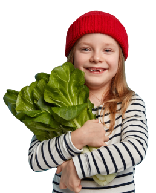

<section class="how-it-works-section">
    <div class="container how-it-works-container">
        <h2 class="how-it-works-title">to order your vegetable basket, simply follow these easy steps</h2>
        
        <p>Our baskets are assembled with care and delivered straight to your doorstep, so you can enjoy the taste of fresh fruit without ever leaving your home.</p>
        <p>Whether you're looking for a healthy snack or a thoughtful gift, our fruit baskets are the perfect choice.</p>
        <div class="steps-container">
            <h3 class="steps-title">3 easy steps for buying fresh vegetables</h3>
            <ol class="steps-list">
                <li class="steps-list-item">
                    Just choose the vegetable you want to order by clicking on the checkboxes next to it.
                </li>
                <li class="steps-list-item">
                    Click on the basket and fill out the form.
                </li>
                <li class="steps-list-item">
                    Sit back and relax! Your fresh vegetables basket will be delivered.
                </li>
            </ol>
            
        </div>
    </div>
</section>